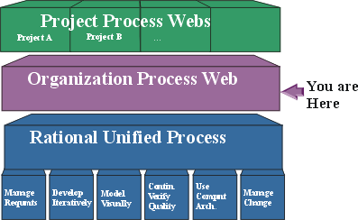

Welcome to the Wylie College Software Process Web Site
The Wylie College Software Process Web Site presents the software development process to be followed by all Wylie College software projects.

The Wylie College Software Process is defined in this Organization-wide Process Website. This Website describes the Organization Process by referencing the relevant parts of the Rational Unified Process Website, and providing additional guidelines, templates, etc., to be used by all Wylie College projects.
Each Project builds its own website which describe its specific process artifacts, and any variation from the organization-wide process.
This website is organized into the following major categories.
- Development Case - documents
the default configuration of the Rational Unified Process to be
used by projects at Wylie College. This may be further tailored
by individual projects.
- Guidelines - describes the
default procedures and guidelines to be followed by all projects at
Wylie College.
- Development Infrastructure -
describes the network, tools, etc. used for software development here
at Wylie College.
- Templates & Examples - used to create project artifacts as described in the Development Case.
There is also a Reference Library and a Discussion Forum, and references to Project Websites.
For more information:
- Concepts: Process Configuration provides more information on how process websites are configured.
- Creating Process Webs describes how to copy this website as a basis for your own websites.